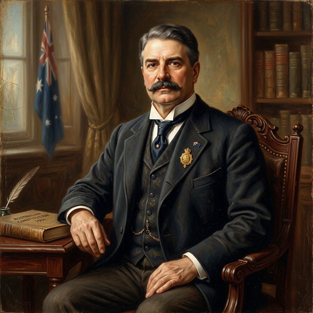

A comprehensive biography exploring the life and legacy.
Edmund "Toby" Barton was born on 18 January 1849 at Hereford Street, Glebe, Sydney — the third son and youngest child of William and Mary Louisa Barton. His father, William, had arrived in Sydney from London in 1827 as an accountant for the Australian Agricultural Company, later becoming a financial agent and sharebroker, though with a chequered career that left the family perpetually stretched financially. With nine children to provide for, his exceptionally well-educated mother ran a girls' school in the 1860s to keep the family afloat.[1]
Barton was nicknamed "Toby" by his schoolmates from early on — a name that followed him for life. He attended Fort Street Model School for two years, then in 1859 enrolled at Sydney Grammar School, where he formed a lifelong friendship with Richard O'Connor (who would later serve with him on the High Court), and was elected school captain in both 1863 and 1864. Already displaying his love of literature and debate, he frequented the Sydney Mechanics' School of Arts, where he honed his considerable oratory skills.[1]
Barton matriculated at the University of Sydney in 1865, and his academic performance was exceptional. He won the prestigious £50 Lithgow Scholarship for classics in 1866, then the Sir Daniel Cooper Scholarship in 1867 after studying under the legendary classicist Professor Charles Badham, who gave Barton a lifelong love of Greek and Latin. He graduated Bachelor of Arts in 1868 and Master of Arts by examination in 1870 — a demanding separate examination process at the time.[1]
From May 1868 he worked for solicitor Henry Bradley, then from June 1870 with barrister G. C. Davies, and was admitted to the Bar on 21 December 1871. Despite his brilliance, briefs were initially slow to come. He was also an enthusiastic cricketer — a fair batsman though "an atrocious fieldsman" by his own admission — playing for the university in 1870 and 1871 and later organising intercolonial matches and umpiring, including the famous NSW v. Lord Harris's English XI match that was interrupted by a riot.[1]
In 1877, while still young and by his own admission impoverished, he wrote frankly to his sweetheart Jane (Jean) Ross: "You do not know the depths of my poverty and the slenderness of my chances." He married Jean on 28 December 1877 at the Watt Street Presbyterian manse, Newcastle. Their marriage would endure through decades of financial uncertainty driven by Barton's prioritisation of public life over professional income.[1]
Barton contested the University of Sydney seat in the Legislative Assembly in 1876 and 1877, losing both times before winning it in 1879. He declared himself a free trader, won the seat of East Sydney in 1882, and on 3 January 1883 became the youngest Speaker the NSW Legislative Assembly had ever seen, aged just 33. The role demanded real authority: he dealt with some of parliament's most rowdy members, introduced new standing orders, and on one occasion had a member physically removed by the serjeant-at-arms — which resulted in Barton being sued for £1,000 in damages, upheld by the Privy Council.[1]
After his time as Speaker ended in 1887 he was appointed to the Legislative Council, served briefly as Attorney-General in the Dibbs Protectionist ministry in 1889, and took silk (QC) on 8 March of that year. During this period, he enjoyed the Sydney social scene deeply, spending convivial evenings at the Athenaeum Club alongside journalists, artists and writers including J.F. Archibald and Julian Ashton, earning the Bulletin's affectionate nickname "Toby Tosspot" for his love of good wine and company.[1]
Barton's political life took its defining turn in October 1889, when he heard Sir Henry Parkes deliver his famous Tenterfield Oration calling for Australian federation. He immediately congratulated Parkes and that November spoke at a packed Sydney Town Hall in support. He was thoroughly familiar with Andrew Inglis Clark's draft constitution and was already forming his own constitutional views.[1]
He served as a NSW delegate to the National Australasian Convention in Sydney in March 1891 — the first serious attempt to draft a federal constitution — impressing both Alfred Deakin and Sir John Downer with his address on the Federal resolutions. When the drafting committee chair Sir Samuel Griffith needed extra members after Sir Andrew Clark fell ill with influenza, Barton stepped up and "strenuously and industriously devoted himself to its work," earning Griffith's warm praise. When Parkes's government fell in October 1891, Parkes personally asked Barton to take over as leader of the federation movement in New South Wales — a poisoned chalice, as federation had stalled badly in colonial parliaments and public enthusiasm was fading.[1]
The years 1894–1897 represent Barton's most remarkable personal sacrifice for federation. Out of parliament, his finances deeply precarious (friends had reportedly collected a sum of money for the benefit of his wife and children's education), Barton threw himself into grassroots campaigning. He left the administrative organisation of the Federal League to non-political volunteers while he personally "stumped the country," addressing approximately 300 public meetings across New South Wales.[1][2]
He drove through the bush in a buggy, speaking at towns, villages and homesteads, often driving through the night. Assisted by young disciples like Robert Garran and Thomas Bavin, he systematically built public support. It was at one such meeting at Ashfield that Garran recorded Barton's most celebrated phrase: "For the first time in history, we have a nation for a continent and a continent for a nation". By March 1897, this tireless work had made him "the acknowledged leader of the federal movement in all Australia," his prestige vastly enhanced by years of patient advocacy.[1]
Barton was elected first of forty-nine candidates for the Australasian Federal Convention that opened in Adelaide on 22 March 1897 — a measure of his national standing. At the Convention he was elected leader and chairman of both the drafting and constitutional committees, the two most critical working groups. Night after night he drove the drafting committee to exhaustion, pressing through the Blue Mountains of legal and political compromise. He was "alert, patient, willing to explain, to intervene," rarely provoked — except by Isaac Isaacs, whom he rebuked as "a pedant".[1]
Historian John La Nauze later paid him perhaps the highest tribute of any federation scholar:
> "There were men in the Convention more eminent and more industrious in their common professions; more learned in constitutional law; equally devoted in the preceding decade to the profitless cause of federation; more prominent and experienced in politics. Yet he led them all, with an authority never questioned, and sustained by the visible and irrefutable example of plain hard work and conscientious devotion to a task."[1]
When the first referendum failed in June 1898 (falling 8,504 votes short of the required 80,000 minimum in NSW), Barton immediately understood that concessions were required and began working towards the crucial 1899 Premiers' Conference that negotiated amendments acceptable to NSW. After Reid secured those amendments, Barton campaigned vigorously in both urban and remote areas for the Yes vote, which NSW finally passed on 29 June 1899 with 107,420 votes to 82,741.[1]
In March 1900, Barton led the Australian colonial delegation to London, tasked with getting the Constitution Bill through the British Parliament without amendments. The central battle was with Colonial Secretary Joseph Chamberlain, who demanded the restoration of the right of appeal to the Privy Council. Barton and his delegation accepted numerous speaking invitations across Britain, arguing that the Bill had been approved by the Australian people themselves and must not be materially altered by Westminster. The compromise they reached — leaving constitutional questions to the new High Court while preserving Privy Council appeal for other matters — was greeted warmly; the Earl of Jersey told Barton the concession "could only have been obtained by tact, firmness and the confidence you inspired". Cambridge University awarded him an honorary LLD during the trip.[1]
Back in Australia, on 19 December 1900, the new Governor-General Lord Hopetoun controversially first invited NSW Premier William Lyne — a fierce opponent of federation — to form the Commonwealth's first ministry. Barton flatly refused to serve under Lyne, and after frantic telegrams from Deakin to other potential ministers, Lyne could not assemble a cabinet and stood aside. Barton was then commissioned to form the ministry, and on Christmas Day 1900 he named his cabinet, including Deakin, O'Connor, and three former premiers — Forrest, Turner and Lyne himself.[1]
On 1 January 1901, the Commonwealth of Australia was proclaimed at a vast ceremony at Centennial Park, Sydney. Barton then won the first federal election, taking the seat of Hunter unopposed, and parliament was formally opened in Melbourne on 9 May 1901 by the Duke of York.[1]
Barton's government (1901–03) was in a structurally difficult position — relying on Labor support for a majority in the House, while facing a Senate where he was in the minority. Yet his administration passed the foundational legislation that shaped Australia's character for a generation:[1]
- Immigration Restriction Act (1901) — establishing the infamous "dictation test" to enforce the White Australia Policy; Barton navigated Colonial Office demands to substitute a European (rather than English) language test[1] - Pacific Island Labourers Act (1901) — providing for the repatriation of Kanakas from Queensland - Commonwealth Public Service Act — establishing a merit-based public service; Barton took a keen personal interest in securing "only the most competent of officers"[1] - Naval Agreement Act — pledging £200,000 to maintain a British squadron based in Sydney while beginning the training of Australian seamen for the Royal Naval Reserve[1] - Planning the High Court of Australia — though the Court was formally established under Deakin, Barton laid the legislative groundwork[1]
His personal management style was characterised by charm, generosity and an almost wilful indifference to administrative detail — to the despair of his secretaries Atlee Hunt and Thomas Bavin, he gave too much time to "importunate callers," forgot engagements, and "had no love for administration". Yet his hold over colleagues who were themselves giants — Deakin, Kingston, Forrest — was remarkable, and rested on the moral authority he had built through twelve years of selfless advocacy.[1]
On 23 September 1903, Barton resigned as Prime Minister and was appointed senior puisne judge of the new High Court of Australia — a move driven partly by his friends' desire to provide for his chronically strained family finances. He proved an unexpectedly outstanding judge. Chief Justice Knox later declared that Barton's "mastery of constitutional law and principles was unsurpassed" and praised his "rich and beautifully modulated voice" in court, his swift grasp of essential issues, and his courtesy. He served on the Court for nearly 17 years, developing important constitutional doctrines including the "implied immunity of instrumentalities" principle that balanced Commonwealth and State powers. In 1915 he sat on the Privy Council in London. He was disappointed in 1919 not to succeed Griffith as Chief Justice.[1]
Barton died suddenly of heart failure on 7 January 1920 at Medlow Bath in the Blue Mountains, aged 70. He was given a state funeral at St Andrew's Cathedral, Sydney, and was survived by his wife, four sons and two daughters. His estate was valued at just £6,565 — a remarkably modest sum for a man of such public achievement, testament to how much he had sacrificed financially for federation. Two portraits hang in his honour: one by Norman Carter in Parliament House, Canberra, and one by John Longstaff in the High Court, Sydney.[1]
The great paradox of Barton is that a man described by contemporaries as "lazy" and excessively fond of comfort and conviviality, who struggled financially for most of his life, managed through sheer moral conviction and force of personality to hold together the most complex multi-colonial negotiation in Australian history — and to hand his country both its Constitution and its first working government.[1]
[1]: https://adb.anu.edu.au/biography/barton-sir-edmund-toby-71
[2]: https://www.nma.gov.au/explore/features/prime-ministers/edmund-barton
[1] https://adb.anu.edu.au/biography/barton-sir-edmund-toby-71
[2] https://www.nma.gov.au/explore/features/prime-ministers/edmund-barton
Would you like to learn more?
Return to the shorter, student-friendly version.
Explore other Australian federation figures.